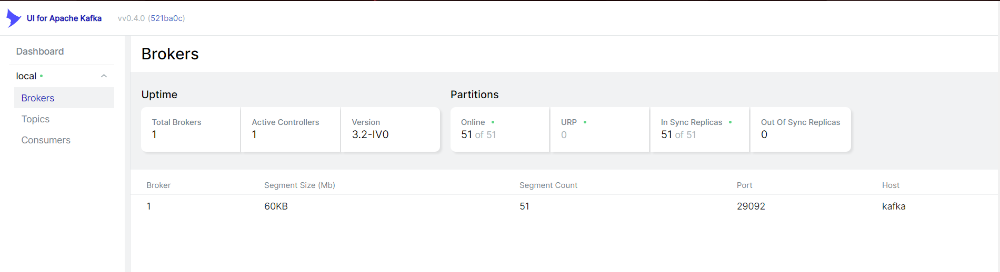

Introduction
This project is a self-initiated project for getting familiar with data engineering tools and data pipeline. In this project, we would craw tweets on Twitter, then leverage kafka stream to help us load data into elastic stack and an app that can print our data. Then users could analyze these tweets with Kibana. Below is the architecture of this project. Note: all the applications we are using were containerized in docker containers.
Starting Applications
We execute our docker-compose command to start all the services at once. Then, we could see all the services are green and running.
We could also soo our kafka cluster is online now. The picture below is from a tool "UI for Apache Kafka", this tool can help us manage Kafka broker, topics, cluster, etc.
The broker page also shows that our Kafka broker is online and ready-to-go.
Reading and Printing Tweets
To start, we need data. Hence, we will craw tweets from Twitter with Twitter API. We would also perform text cleansing. Next, we load these texts into Kafka's topic:"topic-test". In the picture below, what I am showing on the left is the process of capturing tweets. Everytime we capture a tweet, we would print a message "Writing tweets to kafka... Press Control+C to end..." On the right hand side is a app that would print out the tweets we just captured, it's a simple comsuner written with Python.
To ensure that Kafka broker did receive the tweets. We could check "UI for Apache Kafka" again. Now, we see the "topic-test" we named show up in the UI.
When we click on the consumer page, we could see logstash. The data from Kafka would be sent to logstash first, you could refer this to the architecture on top. If you were curious about why we didn't see 2 consumers, this is because "python printer" would only be recognized as consumer only if we are actively printing tweets.
Elastic Search
While we open elastic search, we execute a command "GET topic-test/_search", what this line of command would do is printing out the data indexed with "topic-test" on the right side. We could see there are texts from tweets on the right side. This indicates we have successfully load data into elastic stack.
Kibana
Users could utilize Kibana's analytic tools to perform further analysis.